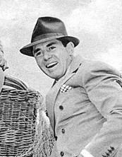

Entertainment · Rho 1925
John Ringling North

Look up on Wikipedia ↗- ChapterRho
- Class of1925
- InstitutionUniversity of Wisconsin
- FieldEntertainment
John Ringling North served as president and director of the Ringling Bros. and Barnum & Bailey Circus, leading the famed "Greatest Show on Earth" for three decades. Before taking charge of the circus, he studied at the University of Wisconsin and later at Yale, though he left the latter early to pursue work in finance and real estate. North assumed leadership of the circus in 1937, serving until 1943, and then again from 1947 to 1967. During his tenure, he steered the organization through the financial difficulties that followed the Depression, modernized its operations, and expanded performances into the western United States. He also introduced significant innovations such as new artistic direction, choreography, and music, all of which reshaped the circus into a more theatrical spectacle.
In the archive
Every page of the scanned volumes that names him. Click a page number to open the scan there with the name highlighted. Names repeat down the generations, so an occasional page may be a different brother of the same name.
Named on 32 pages across 25 volumes of the archive.
…lass of 1925� John A. Hager, Reedsburg, Wis. James W. Lyons, Oak Park, HI. John R. North, Baraboo, Wis. Robert M. Thomas, Madison, Wis. The initiation banquet was combined with a Founder's Day of celebration, and a large number of Alumni…
Page70104 The Diamond of Psi Upsilon Eugene Morse Brimicombe Cleveland, Ohio John Dudley Charlesworth North Adams, Mass. Granger Kent Costikyan Montclair, N. J. Richard Carleton Crisler Cincinnati, Ohio Paul Curtis Wellesley Hills, Mass. John Waldo Douglas…
Page46…oore Gamma 1926 R. H. MoRRiSEY Sigma 1922 Walter W. Nicholson, Jr Psi 1926 John R. North Rho 1925 S. B. O'Hara Nu 1914 R. L. Oldis Epsilon 1927 H. B. Parfet Phi 1925 H. G. Pearce Tau 1907 F. B. Peters Phi 1925 Henry C. Potter Beta 1926 Pa…
Page53…L. J. Nelson, Sigma '27 L. H. Nichols, Beta '31 Stanley B. Nobris, Mu '28 John R. North, Rho '25 R. H. NuMEYER, Mu '28 S. B. O'Haba, Nu '14 James E. Orme, Mu '31 Otto Ovebby, Mu '28 Hans C. Owen, Beta Beta '99 Robebt O. Owens, Jb., Pi '2…
Page136…ife insurance companies has increased from $113,000,- 000 to $750,000,000. John Ringling North, Rho '25, is the present head of Ringling Brothers Cir cus, which, after spending a month in Madison Square Garden, New York City, has started its lo…
Page34…, '03, formerly of Hudson, Wis., now has a citrus grove at Valle Rio, Fla. John Ringling North, '25, president of Ringling Brothers and Barnum & Bailey Circus crashed Life for February 26th with a pictorial account of Gargantua, the gorilla.
Page37…iculture, Washington, D. C. He resides at 316 Roosevelt St., Bethesda, Md. John Ringling North, '25, president of Ringling Brothers, Barnum and BaUey Circus, recently married Germaine Aussey, a star in French motion pictures. EPSILON Dr. Freder…
Page43…to all Mu brothers for their help in furnishing the new chapter house. RHO John Ringling North, '25, nephew of the late great John Ringling, was written up in the Satevepost in August. The story teUs how he's saved the Ringling Brothers-Barnum…
Page45…he Delta, he was to play an important role in the establishment of the Xi. John W. North '41, and Daniel Ayres '42, were two others ultimately to become members of the Xi Chapter. The new organization had as pri mary objects mutual loyalt…
…B, L� Th'25 86 North, Edgerton G,, DD'21 SS North, Dr. James H., L'87 108 North, John B,, E'2S 25 North, Joseph, X'23 76 Northey, R, K., N'12 171 Northcraft, Richard D., TT'40 156 Northrup, Albert A., D'OO 49 Northrup, Prederick B,, P'…
Page91NAMES IN John Ringling North, Rho '25 Brother North has taken over contiol of the Ringling Circus. Brother North an nounced that he now controls 51% of the stock of "The Greatest…
Page6…and JV golf teams, with Doug Morton, Clark George, Pete Hetherington, and John North, all of the class of '54, leading the way. Nate Cvishman and Lou Benoit are our JV racquetmen. We are strong contenders for the total point cup for v…
Page17…Albert C. Jacobs, Phi '21; Max Mason, Rho '98; George H. Moses, Zeta '90; John Ringling North, Rho '25; Nelson A. Rockefeller, Zeta '30; Beardsley Ruml, Zeta '15; Henry L. Stimson. Beta '88; Robert A. Taft, Beta '10; Deems Taylor, Beta '06; Ca…
Page10…nt at North Yarmouth Academy. His address is 39 West Ehn Street, Yarmouth. John North, Kappa '55, has been named special agent at Hartford, Connecticut, by the Aetna Insurance Company. Kenneth Whitehurst, Kappa '57, is with the Souther…
Page37…mherst honors program. He is now a medical student at New York University. John Ringling North, Rho '25, head of the Ringling Brothers and Barnum & Bailey Cir cus, has assembled a fuU-scale travehng com pany to play European cities at the same…
…s folks who sold out to the Ringling Brothers. Further down the road lived John Ringling North, III, with his mother, former wtfe of Henry Ringling North and the only living descendant of this famous fam ily. They were all friends of Theo's." D…
Page32…MA � May 17, 1983 John H. McGill '36 � Cambridge, MA � September 24, 1983 John P. North '55 � Essex, NY � May 7, 1983 David M. Osborne '28 � Gushing, ME � May 8, 1983 W. Newton Pendleton '46 � St. Petersburg, FL � June 24, 1983 Alan M. W…
Page17…ty '26 � DePere, WI � March 29, 1985 Max Murphy '30 � North Palm Beach, FL John R. North '25 � Venice, FL � June 4, 1985 John N. O'Brien '23 � Delvan, WI Harvey B. Piggot '23 � Chicago, IL � November 3, 1984 Leo H. Schoenhofen '36 � Lake…
Page23…Omicron '32 Peter C. S. Nicoll, Nu '55 Robert E. Nissen, Epsilon Omega '71 John R. North, Rho '25 Michael Novakovic, Pi '55 Von D. Oehmig, Zeta '36 Ting P. Oei, Theta '68 Gary L. Ogrosky, Epsilon Omega '69 Edward C. Oliver, Mu '55 Heath O…
…nuary, 1998. J O H N R I N G L I N G N O R T H , R H O ' 2 5 Big Top Boss, John Ringling North and the Circus David Lewis Hammarstrom S29.95, University of Illinois Press August, 1992 The Papers of Robert A. Taft, Volume I, 1889-1938 Clarence E…
Page9…e distribution of interactive videogamesand CD-Roms, including TheArrival. John Ringling North, Rho '25 (University of Wisconsin) - President of Ringling Bros.. Barnum Ik Bailey Circus for 30 years. Also a composer, he wrote such songs as lama…
Page32…r Meledandrl, Zeta '81 (Dartmouth College): President of Fox Family Films. John Ringling North, Rho '25 (University of Wisconsin): Former president of Ringling Brothers, Barnum & Bailey Circus. Robert Ryan, Zeta '31 (Dartmouth College): Oscar-n…
…r Meledandri, Zeta '81 (Dartmouth College): President of Fox Family Films. John Ringling North, Rho '25 (University of Wisconsin): Former president of Ringling Brothers, Barnum & BaUey Circus. COLLEGE FOOTBALL HALL OF FAME (PLAYERS) C. Everett…
…r Meledandri, Zeta '81 (Dartmouth College): President of Fox Family Films. John Ringling North, Rho '25 (University of Wisconsin): Former president of Ringling Brothers, Barnum & Bailey Circus. Robert Ryan, Zeta '31 (Dartmouth College): Oscar-n…
…er Meledandri, Zeta '81 (Dartmouth College): President of Fox FamUy Films. John Ringling North, Rho '25 (University of Wisconsin): Former president of Ringling Brothers, Bamum & Bailey Ckcus. Robert Ryan, Zeta '31 (Dartmouth College): Oscarnomi…